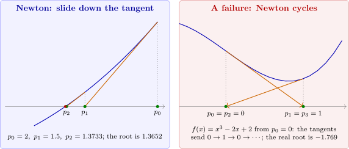

2.4 Newton’s method and the secant method
Newton’s method
Suppose \(f\in C^2[a,b]\) and \(p_0\in [a,b]\) approximates a root \(p\) with \(f'(p_0)\neq 0\). Taylor’s Theorem about \(p_0\), evaluated at \(p\), gives \[0 = f(p) = f(p_0)+(p-p_0)f'(p_0)+\frac {(p-p_0)^2}{2}f''(\xi )\] for some \(\xi \) between \(p_0\) and \(p\). If \(|p-p_0|\) is small, the last term is much smaller than the others, and dropping it gives \(p\approx p_0-\frac {f(p_0)}{f'(p_0)}\). This is the next approximation. Repeating it gives Newton’s method (also called the Newton–Raphson method): \begin {equation} \label {eq:newton} p_n = p_{n-1}-\frac {f(p_{n-1})}{f'(p_{n-1})},\qquad n\geq 1 . \end {equation} Geometrically, \(p_n\) is the point where the tangent line to the graph of \(f\) at \((p_{n-1},f(p_{n-1}))\) crosses the \(x\)-axis (Figure 4). In the language of Section 2.3, Newton’s method is fixed-point iteration with \(g(x) = x-\frac {f(x)}{f'(x)}\), the function constructed there to have \(g'(p) = 0\).
Algorithm 2.4.1 (Newton’s method). To find a solution of \(f(x) = 0\) given an initial approximation \(p_0\).
- Step 1:
- Set \(n = 1\).
- Step 2:
- While \(n\leq N\): if \(f'(p_0) = 0\), output “zero derivative” and stop; otherwise set \(p = p_0-\frac {f(p_0)}{f'(p_0)}\).
- Step 3:
- If \(|p-p_0|<\varepsilon \), output \(p\) and stop.
- Step 4:
- Set \(p_0 = p\) and increase \(n\) by \(1\).
- Step 5:
- Output “method failed after \(N\) iterations” and stop.

Solution. Here \(p_n = p_{n-1}-\frac {p_{n-1}^3+4p_{n-1}^2-10}{3p_{n-1}^2+8p_{n-1}}\), and
| \(n\) | \(p_n\) | \(|p_n-p|\) | \(\frac {|p_n-p|}{|p_{n-1}-p|^2}\) |
| \(0\) | \(1.5\) | \(1.3\times 10^{-1}\) | |
| \(1\) | \(1.373333333333\) | \(8.1\times 10^{-3}\) | \(0.446\) |
| \(2\) | \(1.365262014875\) | \(3.2\times 10^{-5}\) | \(0.487\) |
| \(3\) | \(1.365230013916\) | \(5.0\times 10^{-10}\) | \(0.490\) |
| \(4\) | \(1.365230013414\) | \(<10^{-15}\) | |
The number of correct digits roughly doubles at each step: \(2\), \(4\), \(9\), then full double precision. The last column settles at \(0.490\), and Theorem 2.4.5 below explains this number: it is \(\frac {f''(p)}{2f'(p)} = \frac {6p+8}{2(3p^2+8p)} = 0.4902\).
Solution. With \(f(x) = \cos x-x\) and \(f'(x) = -\sin x-1\), \[p_n = p_{n-1}-\frac {\cos p_{n-1}-p_{n-1}}{-\sin p_{n-1}-1}.\] The iterates are \(p_1 = 0.7395361335\), \(p_2 = 0.7390851781\), \(p_3 = 0.7390851332\), with errors \(4.5\times 10^{-4}\), \(4.5\times 10^{-8}\) and \(4\times 10^{-16}\). Three Newton steps give full accuracy, against \(32\) steps of the fixed-point iteration \(p_n = \cos p_{n-1}\) for an error of \(10^{-6}\) (Example 2.3.9).
Theorem 2.4.4. Let \(f\in C^2[a,b]\) and let \(p\in (a,b)\) satisfy \(f(p) = 0\) and \(f'(p)\neq 0\). Then there is a \(\delta >0\) such that Newton’s method generates a sequence \(\{p_n\}\) converging to \(p\) for every \(p_0\in [p-\delta ,p+\delta ]\).
Proof. Newton’s method is fixed-point iteration with \(g(x) = x-\frac {f(x)}{f'(x)}\). Since \(f'\) is continuous and \(f'(p)\neq 0\), there is \(\delta _1>0\) with \(f'(x)\neq 0\) on \([p-\delta _1,p+\delta _1]\subseteq [a,b]\), so \(g\) is defined and continuous there. Its derivative is \[g'(x) = 1-\frac {f'(x)^2-f(x)f''(x)}{f'(x)^2} = \frac {f(x)f''(x)}{f'(x)^2},\] which is continuous on \([p-\delta _1,p+\delta _1]\) and equals \(0\) at \(p\) because \(f(p) = 0\). So for any \(k\in (0,1)\) there is \(0<\delta <\delta _1\) with \(|g'(x)|\leq k\) on \([p-\delta ,p+\delta ]\). For \(x\) in this interval the Mean Value Theorem gives \[|g(x)-p| = |g(x)-g(p)| = |g'(\xi )|\,|x-p|\leq k|x-p|<\delta ,\] so \(g\) maps \([p-\delta ,p+\delta ]\) into itself. By the Fixed-Point Theorem the iterates converge to \(p\). □
Theorem 2.4.5. Under the hypotheses of Theorem 2.4.4, if \(p_n\longrightarrow p\) with \(p_n\neq p\), then \[\lim _{n\rightarrow \infty }\frac {p_{n+1}-p}{(p_n-p)^2} = \frac {f''(p)}{2f'(p)} .\] In particular the convergence is at least quadratic.
Proof. Taylor’s Theorem about \(p_n\), evaluated at \(p\), gives \[0 = f(p) = f(p_n)+(p-p_n)f'(p_n)+\frac {(p-p_n)^2}{2}f''(\xi _n),\] with \(\xi _n\) between \(p_n\) and \(p\). Divide by \(f'(p_n)\) and rearrange: \[p_n-\frac {f(p_n)}{f'(p_n)}-p = \frac {f''(\xi _n)}{2f'(p_n)}(p_n-p)^2,\] that is, \[p_{n+1}-p = \frac {f''(\xi _n)}{2f'(p_n)}(p_n-p)^2 .\] As \(n\longrightarrow \infty \), \(\xi _n\longrightarrow p\) and \(p_n\longrightarrow p\), and the continuity of \(f'\) and \(f''\) gives the limit. □
Note. The two theorems are local: they guarantee convergence only if \(p_0\) is close enough to \(p\), and they say nothing about how close that is. Far from the root Newton’s method can behave badly, and in practice it is often started from a point found by a few steps of bisection.
Example 2.4.6. Show how Newton’s method fails for (a) \(f(x) = x^{1/3}\); (b) \(f(x) = x^3-2x+2\) with \(p_0 = 0\); (c) \(f(x) = \arctan x\) with \(p_0 = 1.5\).
Solution. (a) \(f'(x) = \frac 13x^{-2/3}\), so \(p_n = p_{n-1}-\frac {p_{n-1}^{1/3}}{\frac 13p_{n-1}^{-2/3}} = p_{n-1}-3p_{n-1} = -2p_{n-1}\). From \(p_0 = 0.1\) the iterates are \(-0.2, 0.4, -0.8, 1.6,\dots \): each step doubles the distance from the root \(0\). The theorems do not apply, since \(f'(0)\) does not exist.
(b) \(f(0) = 2\), \(f'(0) = -2\) give \(p_1 = 1\); then \(f(1) = 1\), \(f'(1) = 1\) give \(p_2 = 0\), and the iterates cycle between \(0\) and \(1\) for ever (Figure 4, right). The only real root is \(p = -1.7693\), far from the starting value.
(c) \(\arctan \) is very flat far from \(0\), so its tangent lines cross the axis far away. From \(p_0 = 1.5\) the iterates are \(-1.694, 2.321, -5.114, 32.30,\dots \), which diverge. From \(p_0 = 1.3\) they are \(-1.162, 0.859, -0.374, 0.034,\dots \) and converge to \(0\). There is a critical starting value \(1.3917\) between the two behaviours.
The secant method
Newton’s method needs \(f'\), which may be expensive or unavailable. Replacing \(f'(p_{n-1})\) by the slope of the line through the last two iterates, \[f'(p_{n-1})\approx \frac {f(p_{n-1})-f(p_{n-2})}{p_{n-1}-p_{n-2}},\] gives the secant method: \begin {equation} \label {eq:secant} p_n = p_{n-1}-f(p_{n-1})\frac {p_{n-1}-p_{n-2}}{f(p_{n-1})-f(p_{n-2})},\qquad n\geq 2 . \end {equation} It needs two starting values \(p_0, p_1\) and only one new evaluation of \(f\) per step. The formula is the same as that of false position, but the secant method always uses the two most recent iterates, whether or not they bracket the root. It therefore gives up the safety of bracketing in exchange for speed.
Example 2.4.7. Apply the secant method to \(\cos x-x = 0\) with \(p_0 = 0.5\), \(p_1 = \frac \pi 4\), and to the test equation with \(p_0 = 1\), \(p_1 = 2\).
Solution.
| \(\cos x-x\) | \(x^3+4x^2-10\) | ||||
| \(n\) | \(p_n\) | error | \(n\) | \(p_n\) | error |
| \(2\) | \(0.7363841388\) | \(2.7\times 10^{-3}\) | \(2\) | \(1.2631578947\) | \(1.0\times 10^{-1}\) |
| \(3\) | \(0.7390581392\) | \(2.7\times 10^{-5}\) | \(3\) | \(1.3388278388\) | \(2.6\times 10^{-2}\) |
| \(4\) | \(0.7390851493\) | \(1.6\times 10^{-8}\) | \(4\) | \(1.3666163947\) | \(1.4\times 10^{-3}\) |
| \(5\) | \(0.7390851332\) | \(9.6\times 10^{-14}\) | \(5\) | \(1.3652119026\) | \(1.8\times 10^{-5}\) |
| \(6\) | \(1.3652300011\) | \(1.2\times 10^{-8}\) | |||
| \(7\) | \(1.3652300134\) | \(1.1\times 10^{-13}\) | |||
The secant method takes one or two more steps than Newton’s method, but each step costs one evaluation of \(f\) instead of one of \(f\) and one of \(f'\). On the test problem its first two steps coincide with false position (Example 2.2.2); from the third step on it uses the two latest points, leaves the fixed end point behind, and accelerates: the number of correct digits grows by a factor of about \(1.6\) per step.
To analyse the secant method we use the divided differences \[f[x_0,x_1] = \frac {f(x_1)-f(x_0)}{x_1-x_0},\qquad f[x_0,x_1,x_2] = \frac {f[x_1,x_2]-f[x_0,x_1]}{x_2-x_0},\] which reappear in interpolation later in the course.
Lemma 2.4.8. If \(f\in C^2\) on an interval containing distinct points \(x_0,x_1,x_2\), then \(f[x_0,x_1,x_2] = \frac 12f''(\xi )\) for some \(\xi \) in that interval.
Proof. Let \(q(x) = f(x_0)+f[x_0,x_1](x-x_0)+f[x_0,x_1,x_2](x-x_0)(x-x_1)\). Direct substitution shows \(q(x_0) = f(x_0)\) and \(q(x_1) = f(x_1)\), and a short calculation using the definitions shows \(q(x_2) = f(x_2)\). So \(f-q\) vanishes at three distinct points, and by the Generalized Rolle’s Theorem (Theorem 1.1.4) \((f-q)''(\xi ) = f''(\xi )-2f[x_0,x_1,x_2] = 0\) for some \(\xi \). □
Theorem 2.4.9. Let \(f\in C^2\) near a simple root \(p\) (\(f(p) = 0\neq f'(p)\)), and let the secant iterates \(p_n\) converge to \(p\), with \(e_n = p_n-p\neq 0\). Then \[e_{n+1} = \frac {f[p_{n-1},p_n,p]}{f[p_{n-1},p_n]}\,e_ne_{n-1},\qquad \text {so}\qquad e_{n+1}\approx \frac {f''(p)}{2f'(p)}\,e_ne_{n-1}\] for large \(n\), and the order of convergence is \(\alpha = \frac {1+\sqrt 5}{2}\approx 1.618\).
Proof. In divided-difference notation the method is \(p_{n+1} = p_n-\frac {f(p_n)}{f[p_{n-1},p_n]}\). Since \(f(p) = 0\), \(f(p_n) = f[p_n,p]\,e_n\), and \[e_{n+1} = e_n-\frac {f[p_n,p]}{f[p_{n-1},p_n]}e_n = \frac {f[p_{n-1},p_n]-f[p_n,p]}{f[p_{n-1},p_n]}\,e_n = \frac {f[p_{n-1},p_n,p](p_{n-1}-p)}{f[p_{n-1},p_n]}\,e_n,\] using the definition of \(f[p_{n-1},p_n,p]\). This is the first formula. By the Mean Value Theorem and Lemma 2.4.8, \(f[p_{n-1},p_n] = f'(\eta _n)\) and \(f[p_{n-1},p_n,p] = \frac 12f''(\xi _n)\) with \(\eta _n,\xi _n\longrightarrow p\), which gives the approximation.
For the order, write \(C = \left |\frac {f''(p)}{2f'(p)}\right |\) and suppose \(|e_{n+1}|\approx A|e_n|^\alpha \). Then \(|e_n|\approx A|e_{n-1}|^\alpha \), so \(|e_{n-1}|\approx (|e_n|/A)^{1/\alpha }\), and the relation \(|e_{n+1}|\approx C|e_n||e_{n-1}|\) becomes \[A|e_n|^\alpha \approx C A^{-1/\alpha }|e_n|^{1+1/\alpha }.\] For this to hold as \(e_n\longrightarrow 0\) the exponents must agree: \(\alpha = 1+\frac 1\alpha \), that is \(\alpha ^2-\alpha -1 = 0\), whose positive root is \(\alpha = \frac {1+\sqrt 5}{2}\). (A rigorous version of this argument, with explicit bounds, is in the texts by Atkinson and by Süli and Mayers.) □
Note. Newton’s method has order \(2\) but needs two function evaluations (\(f\) and \(f'\)) per step; two secant steps cost the same and reduce the error with order \(1.618^2 = 2.618\). Measured per function evaluation, the secant method is the more efficient of the two (\(\sqrt 2\approx 1.41\) against \(1.618\)), which is why it, and the bracketed methods built on it, are popular in practice.
Questions on this section
Stuck on something here? Ask below and it stays attached to this topic.